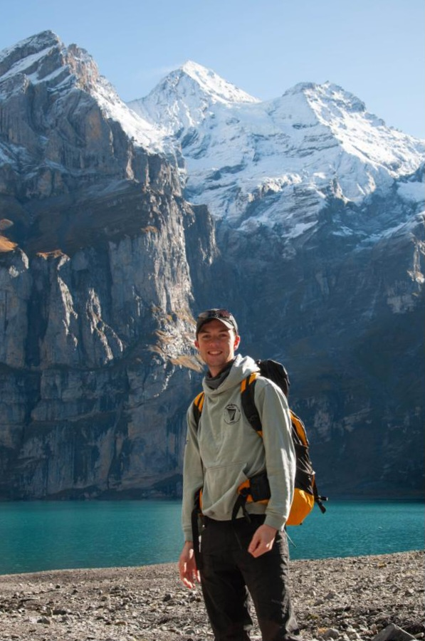

About
I am a recent graduate with a Master’s degree in Physics from ETH Zürich, with a background in theoretical physics and astrophysics. My primary research interests lie in gravitational physics and cosmology, with experience in gravitational waves for extreme mass ratio inspirals and strong gravitational lensing with Bayesian parameter estimation.
Education:
- MSc Physics – ETH Zürich (2022–2024)
- BSc Theoretical Physics – University College Dublin (2018–2022)
Research Interests
My research interests lie in gravitational physics and cosmology, with a focus on connecting fundamental theory to computational modelling and data-driven inference. I am particularly motivated by problems at the intersection of general relativity, cosmology, and modern statistical or machine learning methods.
A central theme of my work is relativistic astrophysics, gravitational waves, and lensing. I have experience with waveform analysis for extreme mass ratio inspirals (EMRIs), strong gravitational lensing with Bayesian parameter inference of galactic mass distributions, and geodesic orbits around black holes with statistical inference using Monte Carlo simulations.
The application of advanced statistical and machine learning methods is becoming ever more important as we enter the era of big data in gravitational physics and cosmology. I have a strong interest in simulation-based inference methods and in scientific machine learning methods, such as physics-informed neural networks (PINNs) or convolutional neural networks, and aim to apply them in my research.
My aims are to use gravitational physics as a probe into the universe, to explore nature's most extreme environments and to understand broader cosmological structure. I look forward to continuing further in research at the interface of gravity, cosmology, and computational science.
Beyond Research
Outside of research work, I enjoy hiking and spending time in the mountains and along the coast. I also have a strong interest in linguistics and language learning, and I am currently improving my proficiency in German, with a particular appreciation for its idiomatic and grammatical structure.
“The most incomprehensible thing about the universe is that it is comprehensible.” - Albert Einstein

